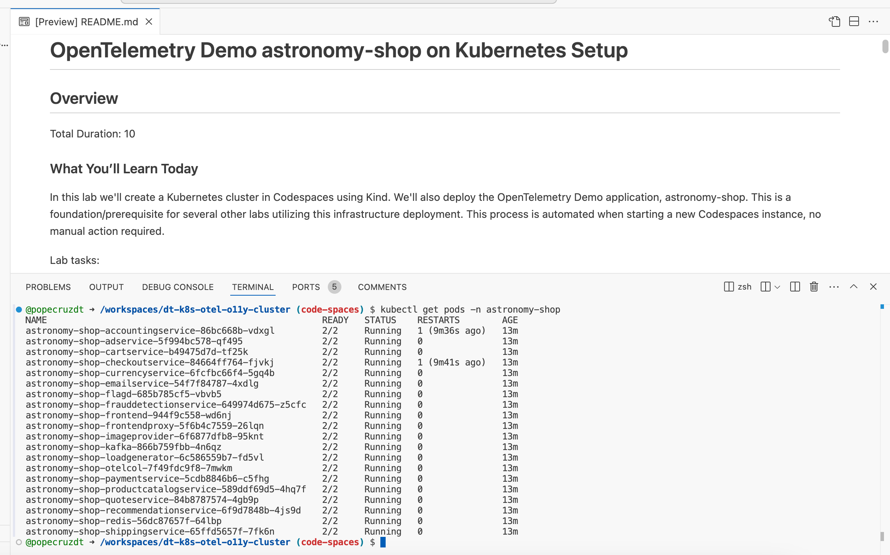

3. Codespaces
This codespace is powered by the Dynatrace Enablement Framework, this means that this codespace:
- can run in github codespaces, as a remote container or locally as docker container
- is crosscompiled for AMD and ARM architectures
- follows a set of standards and best practices for enhancing the user experience
Want to learn more about it? We invite you to read this documentation
Create Codespace#
Click to open Codespaces for this lab repository:

Codespace Configuration
- Branch
- select the main branch
- Dev container configuration
- select Dynatrace Enablement Container
- Machine type
- select 4-core
- Region
- select any region, preferably one closest to your Dynatrace tenant
Wait for Codespace#
We know your time is very valuable. This codespace takes around 7-10 minutes to be fully operational. A local Kubernetes (kind) cluster will be configured and in it a sample application, Astronomy Shop, will be deployed. To make your experience better, we are also installing and configuring tools like:
k9s kubectl helm node jq python3 gh
Explore Codespace#
Your Codespace has now deployed the following resources:
- A local Kubernetes (kind) cluster, with some pre-deployed apps that will be used later in the demo.
After a couple of minutes, you'll see this screen in your Codespaces terminal. It contains the links to the UI of the application which we will be using for our hands-on training.
Sample output:

Validate Astronomy Shop#
When the Codespace instance is idle, validate the astronomy-shop pods are running.
Command:
kubectl get pods -n astronomy-shop

Tips & Tricks#
We want to boost your learning and try to make your experience as smooth as possible with Dynatrace trainings. Your Codespaces have a couple of convenience features added.
Show the greeting#
In the terminal, there are functions loaded for your convenience. By creating a new terminal the greeting will be shown that includes the links to the exposed apps, the Github pages, the Github Repository, the Dynatrace Tenant that is bound to this devcontainer (if applicable) and some of the tools installed.
You can create a new terminal directly in VSCode, type zsh or call the function printGreeting and that will print the greeting with the most relevant information.
Navigating in your local Kubernetes#
The client kubectl and k9s are configured so you can navigate in your local Kubernetes.

Troubleshooting#
Astronomy Shop#
If you encounter problems with the Astronomy Shop app deployed in the astronomy-shop namespace, you can easily recycle the pods.
Recycle pods:
kubectl delete pods --all -n astronomy-shop
But before doing so, if you want to see what is happening we recommend the following:
Verify all astronomy-shop pods
kubectl get pods -n astronomy-shop
Check for events in the astronomy-shop namespace
kubectl get events -n astronomy-shop
Check for system and cluster events
kubectl get events -n kube-system
kubectl get events -n default
App exposure#
The astronomy-shop application is exposed via NodePort and it's mapping port 8080 to Cluster port 30100.
Verify service:
kubectl get svc astronomy-shop-frontendproxy -n astronomy-shop
Finish Codespace Setup#
Define workshop user variables#
In your Github Codespaces Terminal set the environment variables:
Sprint Environment
Are you using a Sprint environment for your Dynatrace tenant? If so, then use export DT_ENDPOINT=https://{your-environment-id}.sprint.dynatracelabs.com/api/v2/otlp instead of the live version below.
export DT_ENDPOINT=https://{your-environment-id}.live.dynatrace.com/api/v2/otlp
export DT_API_TOKEN={your-api-token}
export NAME=<INITIALS>-k8s-otel-o11y
Deploy OpenTelemetry Operator#
Move to the base directory
Command:
cd $BASE_DIR
pwd
/workspaces/enablement-kubernetes-opentelemetry
You should find yourself at the base directory of the repository. If not, then navigate to it.
Create dynatrace namespace
Create the dynatrace namespace. This is where we'll deploy the OpenTelemetry Collectors.
Command:
kubectl create namespace dynatrace
Sample output:
> namespace/dynatrace created
Create dynatrace-otelcol-dt-api-credentials secret
The secret holds the API endpoint and API token that OpenTelemetry data will be sent to.
Command:
kubectl create secret generic dynatrace-otelcol-dt-api-credentials --from-literal=DT_ENDPOINT=$DT_ENDPOINT --from-literal=DT_API_TOKEN=$DT_API_TOKEN -n dynatrace
> secret/dynatrace-otelcol-dt-api-credentials created
Deploy cert-manager, pre-requisite for opentelemetry-operator
Command:
kubectl apply -f cluster-manifests/cert-manager.yaml
Sample output:
namespace/cert-manager created\ customresourcedefinition.apiextensions.k8s.io/certificaterequests.cert-manager.io created\ customresourcedefinition.apiextensions.k8s.io/certificates.cert-manager.io created\ ...\ validatingwebhookconfiguration.admissionregistration.k8s.io/cert-manager-webhook created
Wait 30-60 seconds for cert-manager to finish initializing before continuing.
Deploy opentelemetry-operator
The OpenTelemetry Operator will deploy and manage the custom resource OpenTelemetryCollector deployed on the cluster.
Command:
kubectl apply -f cluster-manifests/opentelemetry-operator.yaml
Sample output:
namespace/opentelemetry-operator-system created\ customresourcedefinition.apiextensions.k8s.io/instrumentations.opentelemetry.io created\ customresourcedefinition.apiextensions.k8s.io/opampbridges.opentelemetry.io created\ ...\ validatingwebhookconfiguration.admissionregistration.k8s.io/opentelemetry-operator-validating-webhook-configuration configured
Wait 30-60 seconds for opentelemetry-operator-controller-manager to finish initializing before continuing.
Validate that the OpenTelemetry Operator components are running.
Command:
kubectl get pods -n opentelemetry-operator-system
Sample output:
| NAME | READY | STATUS | RESTARTS | AGE |
|---|---|---|---|---|
| opentelemetry-operator-controller-manager-5d746dbd64-rf9st | 2/2 | Running | 0 | 1m |
Continue#
In the next section, we'll ship logs from Kubernetes to Dynatrace using OpenTelemetry.